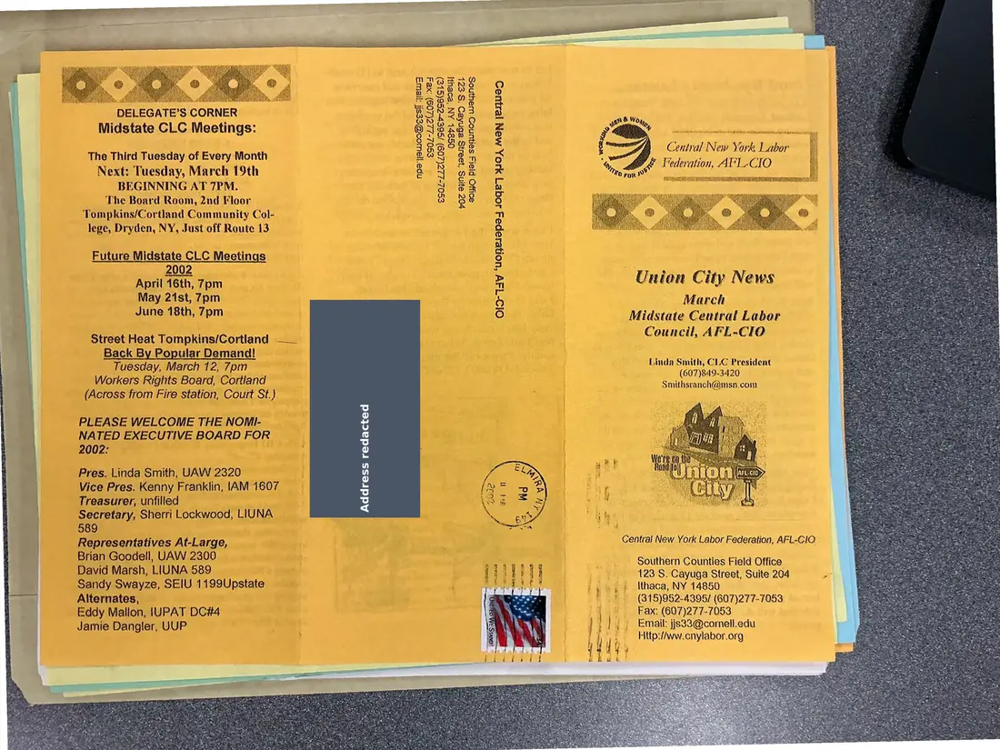
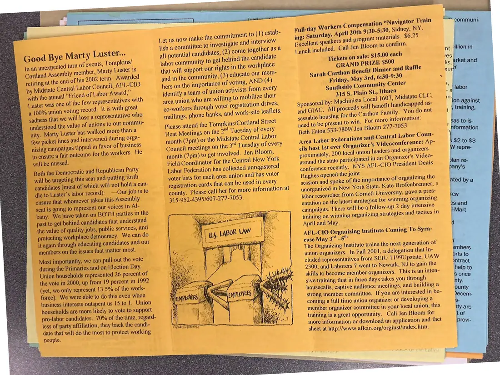

Newsletter, 2 pages
Union City News, Midstate Central Labor Council, March 2002
March 2002
Includes “Good Bye Marty Luster…,” on the retirement of Tompkins-Cortland Assembly member Marty Luster at the end of his 2002 term (the council had given him its Friend of Labor Award), along with a calendar of Street Heat and council meetings.
Download or cite this itemPages


(open zoom view)A mailing label with a personal address has been covered on this page.
Read the page text (machine-read, contains errors)
This text was generated automatically from the photograph and has not been corrected. The image is the authoritative record.
MO § inal | Tuesday of | Tuesday, Ma (NING AT 7] Tiveta, | Union Address redacted Central New York Labor Federation, AFL. Southern Counties Field Office 123 S. Cayuga Street, Suite 204 . Ithaca, NY 14850 (315)952-4395/ (607)277-7053 Fax: (607)277-7053 i} 4) Email: jjs3@comell.edu Http:/Aww.cnylabor.org


(open zoom view)Read the page text (machine-read, mostly readable)
This text was generated automatically from the photograph and has not been corrected. The image is the authoritative record.
full-day Workers Compensation “Navigator Train: ing? Saturday, April 20th 9:30-5:30, Sidney, NY. Excellent speakers and program materials. $6.25 Lunch included. Call Jen Bloom to confirm. ‘Tickets on sale: $1 GRAND PRIZ Sarah Carthon Benefit Din Friday, May 3rd, 6:30-9:30 Southside Community Center 318 8. la Let us now make the commitment to (1) estab- lish a committee to investigate and interview all potential candidates, (2) come together asa labor community to get pehind the candidate nts in the workplace that will support our rights in and in the community, (3) educate out metn- bers on the importance of voting, AND (4) identify a team of union activists from every area union who are willing to mobilize their co-workers through voter registration drives, sponsored and GIAC. All proceeds mailings, phone banks, and work-site leaflets. sessable housing for the Carthon F For more information: Please attend the Tompkins/Cortland Street Seay ante a 1] Wifey Ht } ; aes nee 1 ; SSM. | Beth Eaton §33-7809/ Jen Bloom 277-1053 3" Tuesday of eve Area Labor Federations Council meetings on the ret involved. Jen Bloom, cils host Ist ever Organizer proximately, 200 local union leaders and organizers month (7pm) to Field Coordinator for the Central New York : ea ere Brcanizeis Vick Labor Federation has collected unregistered around the state participated in an O°Bn'% © nue : : ly. NYS AFL-CIO President Dents voter lists for each area union and has voter H Rie ristration cards that can be used in ever ushes opened the jomt mas Soe = ; yy session and spoke of the importance of organizing the county. Please call her for more information at —_ynorganized in New York State. Kate Brofenbrenner, 2 315-952-4395! 607-277-7053. Jabor researcher from Cornell Universily, gave & pres- entation on the latest strateg) vies for winning organizing, campaigns. There will be a follow-up 2 day intensive training on winning organizing strategies and tactics in April and May. Good Bye Marty Luster... in an unexpected turn of events, Tompkins/ Cortland Assembly member, Marty Luster 1s retiring at the end of his 2002 term. Awarded by Midstate Central Labor Council, AFL-CIO with the annual “F riend of Labor Award,” Luster was one of the few representatives with a 100% union voting record. Itis with great sadness that we will lose a representative who understood the value of unions to our commu- nity. Marty Luster has walked more than a few picket lines and intervened during orga- nizing campaigns tipped in favor of business to ensure a fair outcome for the workers. He will be missed. Both the Democratic and Republican Party will be targeting this seat and putting forth candidates (most of which will not hold a can- dle to Luster’s labor record). ~-Our job is to ensure that whomever takes this Assembly seat is going to represent our voices in Al- bany. We have taken on BOTH parties in the past to get behind candidates that understand the value of quality jobs, publ ic services, and protecting workplace democracy. We can do it again through educating candidates and our wa eh ee ) AF LeCIO Organizing Institute Coming To Syra- members on the issues that matter most, "TF ecasrnaaaunangelaee ate | whe pee “ =" : | Most importantly, we can pull out the vote | | ane See as. in Fall 2001 ee ane es during the Primaries and on Election Day. cluded representatives from SEIU 1 199U state, UAW Union households represented 26 percent of 2300, and Laborers 7 went id Reweaik N : oe is the vote in 2000, up from 19 percent in 1992 skills to become member ocuanizers This on ea: sive training that in three days takes you through aud Central Labor Coun- ts Videoconference: Ap- (yet, we only represent 13.5% of the work- housecalls, captive audience mectings, and building a strong member committee. If you are interested in be- coming, a full time union organizer or developing a member organizer comunittee in your local union, this training is a great opportunity. Call Jen Bloom for more information or download an application and fact sheet at http://www.aflcio.org/orginst/index. htm. force). We were able to do this even when business interests outspent us 15 to 1. Union households are more likely to vote to support pro-labor candidates. 70% of the time, regard- less of party affiliation, they back the candi- date that will do the most to protect working
See something wrong, or recognize a person or event? Send a correction. If you hold rights in this item or think it should not be public, write to the same address.